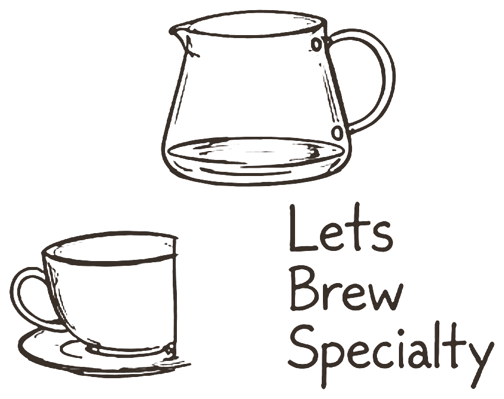
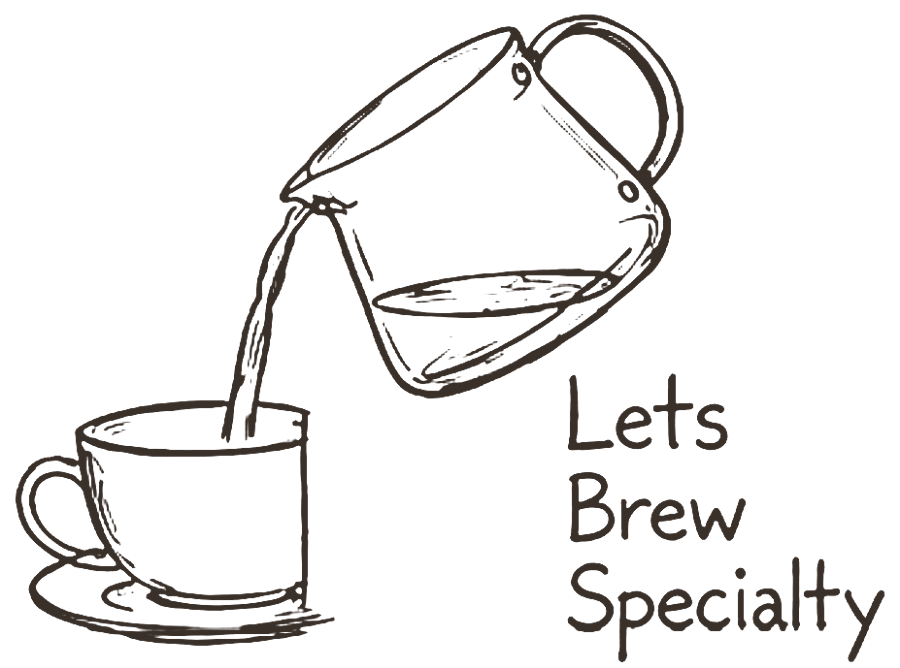
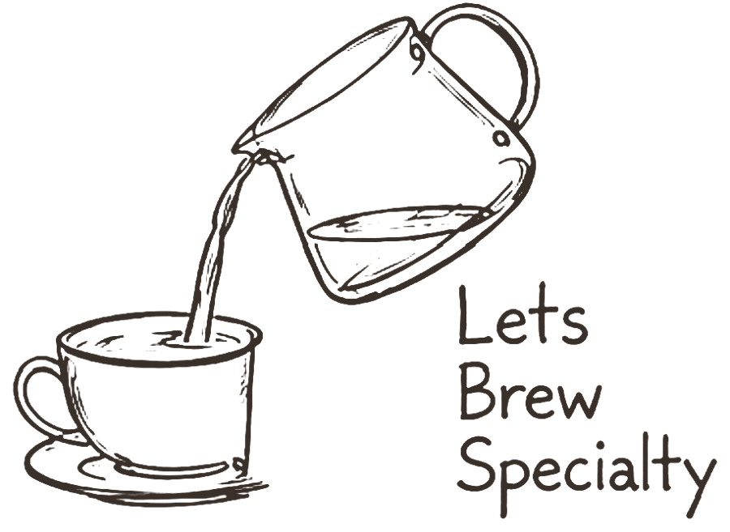

Hardheid is het magnesium en calcium in je water. Die twee trekken de smaak uit de koffie: magnesium pakt vooral de aroma's, calcium meer body en zuren. Alkaliniteit (bicarbonaat) is iets anders — dat dempt zuren. Te veel ervan haalt precies het frisse weg waar je een lichte branding om koopt.
Begin met demiwater of heel zacht flessenwater, want dan weet je zeker wat erin zit. De SCA mikt op ongeveer 51–68 mg/l calciumhardheid.
Koffie is ~98% water, en bij filter staat er geen crema of melk overheen. Te zacht smaakt vlak en hol; te hard maskeert nuance en verkalkt je machine. Eén vaste waterbasis maakt je afstellen eerlijk: dan proef je de maling en niet het water.